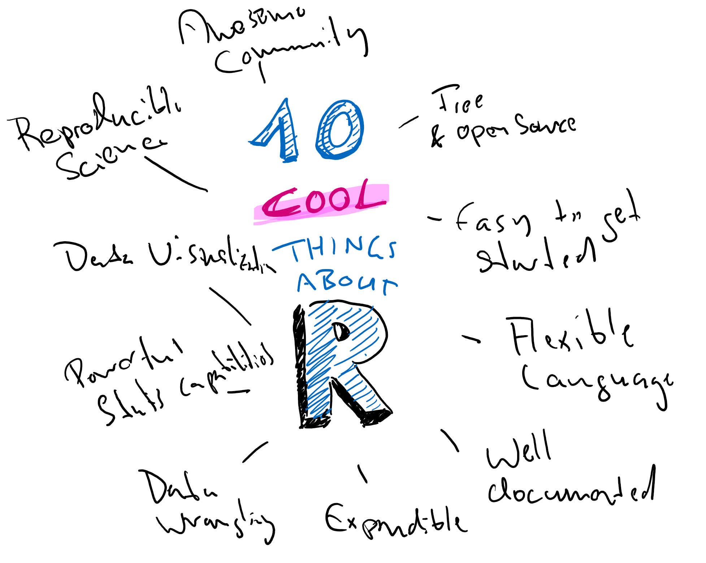

The road ahead
Now that we know what R is and we have discussed some good alternatives, we will have a look at what speaks for learning R. There are many good reasons to learn R! In the next section of the book I will present ten of them, and we will also get hands-on with R. This is a very superficial introduction and we will skip over some of the details for the sake of showing you the whole spectrum of what R has to offer and providing you with knowledge that is practically useful in as little time as possible.
We will use modern R with RStudio and the Tidyverse (more about that later). This will help us to focus on data analysis quickly, without worrying to much about some of the more technical aspects of programming.
Overview
Here are the 10 things we will look at:

1. Free and open source
We will learn about free and open source software and why it is great.
2. Easy to get started
We will install R and RStudio, setup an RStudio project, and start interacting with R in the console and by writing our first script.
3. A flexible language that grows with you
We will get to know the fundamental data types and data structures of R.
4. Well-documented
We will learn how to get help in R.
5. Expandable
We will learn how to add additional functions to R by installing packages and we will learn how to load data into R.
6. Powerful data wrangling functions
We will see how to transform data to prepare it for data analysis, join data.
7. Powerful data visualization functions
We will make a complex statistical graph with just one line of code.
8. Powerful statistical methods
We will run a statistical model with just one line of code.
9. Encourages reproducible research
We will make our analysis reproducible.
10. An awesome community
We will talk about where to find other R users and how to continue learning.
Conventions
In the text, names of R packages will look like this: {r tidyverse}. R code will appear inline like this print("Hello R!") or in a box, followed by its output like this:
[1] "Hello R!"There are three different types of callout boxes:
At the beginning of each chapter, I will list the things we are going to do and learn. You can use these to check your prior knowledge and decide to skip chapters that won’t provide any new insights for you.
This is an info box. It expands on a learning point and gives you details that may not be essential but could help you to see the connections between concepts. It is ok to skip these entirely if they are not helping.